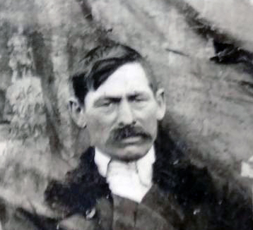

Продолжительность жизни: 50
Место жительства: с. Ястребово
Основное занятие: в Личном хозяйстве
Место рождения: Борисовский уезд (Минская губерния)
Социальное происхождение: раскулаченный
Арестован 19 апреля 1931г.
2 июля 1931 осужден особой тройкой ПП ОГПУ ЗСК
Расстрелян 28 июля 1931, в г. Ачинске
Реабилитирован прокуратурой КК 13 декабря 1989г. Архивное дело: (П-16934).
Источник Книга памяти Красноярского края - т.02
Отец: Герилович Викентий
Мать: Герилович Надежда/Вера
Брат: Герилович Федор Викентьевич (1887 - 1958)
Жена: Герилович (Кононович) Анастасия Романовна (19.12.1878 - 1978)
Сын: Герилович Анисим Иванович (1904 - 08.12.1987)
Сын: Герилович Василий Иванович (23.12.1914 - 01.06.1993)
Сын: Герилович Георгий Иванович (20.04.1916 - 08.12.2016)
Дочь: Злобина (Герилович) Мария Ивановна (24.08.1922)
Сын: Герилович Иван Иванович (20.12.1924)
Дочь: (Герилович) Александра Ивановна
Дочь: Плюсина (Герилович) Марина Ивановна
Дочь: (Герилович) Ефросинья Ивановна
Родился: 1881. Отец: Герилович Викентий. Мать: Герилович Надежда/Вера.
Женился. Жена: Герилович (Кононович) Анастасия Романовна.
Родился сын: Герилович Анисим Иванович, 1904. Мать: Герилович (Кононович) Анастасия Романовна.
Родился сын: Герилович Василий Иванович, 23.12.1914. Мать: Герилович (Кононович) Анастасия Романовна.
Родился сын: Герилович Георгий Иванович, 20.04.1916. Мать: Герилович (Кононович) Анастасия Романовна.
Родилась дочь: Злобина (Герилович) Мария Ивановна, 24.08.1922. Мать: Герилович (Кононович) Анастасия Романовна.
Родился сын: Герилович Иван Иванович, 20.12.1924. Мать: Герилович (Кононович) Анастасия Романовна.
Родилась дочь: (Герилович) Александра Ивановна. Мать: Герилович (Кононович) Анастасия Романовна.
Родилась дочь: Плюсина (Герилович) Марина Ивановна. Мать: Герилович (Кононович) Анастасия Романовна.
Родилась дочь: (Герилович) Ефросинья Ивановна. Мать: Герилович (Кононович) Анастасия Романовна.
Умер: 28.07.1931, г. Ачинск. Причина смерти: Расстрелян.
. |